Submit a Message
Education

2016 – 2020
Game Technologies (MS)
Middle East Technical University
Ankara, Turkey
CGPA: 3.79/4.00

2010 – 2014
Graphic Design (BA)
Bilkent University
Ankara, Turkey
CGPA: 3.40/4.00

1998 – 2010
Mathematics & Science
Büyük College
Ankara, Turkey
Elementary, Middle, High
Related undergrad courses
I have completed:
- Basic Design I, II
- Graphic Design I, II, III, IV, V, VI
- Typography I, II, III
- Motion Graphics
- Advanced Animation I, II
- Drawing I, II
- Illustration I, II
- Design Issues
- Advanced Photography I, II
- Psychology of Advertisement
- Visual Techniques I, II
- Advanced Photography I, II
- Technical Drawing & Lettering
- Web Design
- Logos, Symbols & Signs
- Marketing Principles
Related grad courses
I have completed:
- Game Development Pipeline
- Psychology in Game Design
- Gamification & Persuasive Games
- Artificial Intelligence in Computer Games
- Physics for Computer Games
- Game Metrics
- Procedural Sound Design
Thesis study on:
"The effects of visual realism on the participant's sense of immersion and presence in virtual reality environments"
Since the very first day I was aware of myself, I knew that I want to work on making great games for the rest of my life. Although how education works in Turkey didn't let me do much progress in terms of personal knowledge and self improvement before university, I developed myself as much as I could nonetheless at the cost of grades.
Enrolling to the university as a mediocre student, I proved to everyone and to myself that I am indeed a bright mind when it comes to doing what I love. Since 2010, everything I did as school projects and in work environment, I make it so that they are at least somehow related to games, and I want it to stay that way.
Experience

September 2020 - Now
Senior UX & Game Designer
MildMania
Ankara, Turkey
Full-Time
Currently working as a senior UX & game designer, I am responsible for level design, mechanics design, balancing, prototyping, playtesting, UX design of several mid-core mobile games and UI/UX design, live-ops, balancing of several hardcore Roblox games.

March 2018 - January 2019
Game Designer
Creasaur Entertainment
Ankara, Turkey
Full-Time
Worked as a game designer, my responsibilities were mechanics design, level design, balancing, prototyping, playtesting, ideation, documentation, in-game economics and engine implementations of assets for several casual mobile games.

February 2016 - August 2017
UI/UX Designer
Pixofun
Ankara, Turkey
Full-Time
As my job title and primary focus was designing the UI/UX for a number of serious games, I also worked as a generalist, filling a wide variety of other roles when needed including illustration, animation, game design, trailer & teaser production, 3D modelling & texturing, prototyping, play testing, sound design and localization.
May 2016 - June 2017
UX & Graphic Designer
Netvizyon
Ankara, Turkey
Freelance
In the free time I had remaining from my full-time job at the time, I took part as additional support for UX design & graphic design projects with strict deadlines. I also made several translations and worked on a concept framework for a game project.

August 2014 - January 2015
UI/UX Designer
ODTÜ Teknokent Atom
Ankara, Turkey
Part-Time
As a starting point to my career in the games industry, I worked as a UI/UX designer and I took part in several low-budget casual game projects for mobile platforms and an online multiplayer social game developed for browsers.

November 2010 - February 2012
Producer & Graphic Designer
Radio Bilkent
Ankara, Turkey
Part-Time
At the radio of my university, my responsibilities consisted of producing several shows, editing podcasts, recording sessions, creating intros/outros/jingles, as well as designing deters and promotional material graphics.
As a student of graphic design, there was a time where I had to work in some advertisement agencies, printhouses, and take part in some graphic design stuff, but I never really liked doing something purely related to graphic design, thus most of my work were not that good, because no passion was present.
After completing my education and acquiring experiences above, since I now have both the required knowledge and experience to take part in doing what I really love, I don't consider working in any other sector than the games industry anymore (unless there is an exceedingly unique opportunity).
Participations

Global Game Jam
Participated in every Global Game Jam event since 2014, organized by Middle East Technical University ATOM in Ankara, Turkey.

Ludum Dare
Continuous participant of Ludum Dare jams and events between 2016 and 2019. Nowadays, I make entries only when I find the time and energy.

Nexus Mods
Veteran modding contributor and enthusiast in the Nexus Mods communities (mainly The Elder Scrolls: Skyrim and Fallout: New Vegas) between 2011 and 2018.
Hobbies & Interests
Hobbies
Anything and everything related to computer games, fantasy role-playing, listening game/movie soundtracks, reading books/reviews/articles about games, playing guitar/piano/experimental instruments, playing basketball/tennis, amateur photography, walking/cycling, traveling/wandering
Interests
Game design & development, e-sports, every kind of good music, every aspect of technology, creative design, digital trends, producing digital and analogue music and soundtracks, reviewing games, space & universe, science-fiction, fantasy fiction, quantum physics, philosophy
Favorites
Favorite Band: Radiohead
Favorite Movie: The Matrix
Favorite TV Show: Rick & Morty
Favorite Number: 42
Favorite Drink: Red Wine
Favorite Games
Favorite RPG: The Witcher 3: Wild Hunt
Favorite Platformer: Hollow Knight
Favorite Strategy: StarCraft: Brood War
Favorite Puzzle: The Talos Principle
Favorite Adventure: The Dream Machine
Favorite Action: Grand Theft Auto 5
Favorite Sandbox: Space Engineers
A list of around a 100+ games including all my favorites are available here.


Game Design


Game Design Works
- Lootland Royale (Game/Level/Mechanics Design, Balancing)
- Polybattle (Game Design, Balancing)
- Shoot Out! (Live Ops, Playtesting)
- Luca: The Dreamer (Project Lead, Game/Level/Mechanics Design)
- pliq (Mechanics Design)
- Baduka (Mechanics/Level Design)
- Jö (Game/Level/Mechanics/Story/Concept Design)
- Auron (Game/Level/Mechanics/Concept Design)


Experience
In the games industry for:
+8 years
Been a passionate gamer for:
27 years
September 2020 - Now
Senior UX & Game Designer
MildMania
Ankara, Turkey
Full-Time
Experience
In the games industry for:
+8 years
Been a passionate gamer for:
27 years
September 2020 - Now
Senior UX & Game Designer
MildMania
Ankara, Turkey
Full-Time
Education
2016 – 2020
Game Technologies (MS)
Middle East Technical University
Ankara, Turkey
CGPA: 3.79/4.00
2010 – 2014
Graphic Design (BA)
Bilkent University
Ankara, Turkey
CGPA: 3.40/4.00
General Info
From:
İzmir, Turkey
Born in:
1992
Marital status:
Engaged
Drivers license:
B, A2
Mandatory military service:
Completed
UI/UX Design


- User Interface Design
- User Experience Design
- Prototyping & Wireframing
- Interaction Design
Game Design


- Systems & Mechanics
- Level & World Design
- Economy & Balancing
- Design Documentation
Programming


- Interface Scripting
- Concept Prototyping
- Web Development
- Software Design

Hello, I'm Bleda.
I am someone who plays, designs, dreams and lives games.
I am a professional UI/UX designer with a decade of experience in the games industry and a suited educational background.
My only and ultimate goal, is to take part in the creation of great games, like the many I've played to this day, which made me who I am.
Experience
In the games industry for:
+8 years
Been a passionate gamer for:
27 years
September 2020 - Now
Senior UX & Game Designer
MildMania
Ankara, Turkey
Full-Time
Contact me
bleda@alumni.bilkent.edu.tr
bleda.tunay@metu.edu.tr
You can get in touch with me by sending an email, using the contact form or via any of my online accounts below.
I respond in around 2 days.


General Skills
- Spoken Languages
- Project Management Tools
- Operating Systems
- Alternative Frameworks
Turkish, English, German
Git, Discord, ClickUp, Trello, Slack, Jira
Windows, Mac OS X, Linux / Ubuntu
Unreal, Corel, Blender etc.


Polybattle
|
Genre
Platform
Responsibilities
Links |
Developer
Partner
Publisher
Release Date |
"Polybattle" is an FPS game for the Roblox platform, aiming to be the Roblox alternative of Battlefield with low-poly style.
Two teams compete against each other and try to control the majority of the objectives. The gameplay includes wide range of tactical vehicles, diverse classes and atmospheric maps. Not only skill, but strategy and teamwork can lead to victory. It has been one of the top FPS games in the Roblox since its inception.
I am working on the game both in terms of its UI/UX design and game design elements like new weapons, new vehicles and balancing.

Lootland Royale
|
Genre
Platform
Responsibilities |
Developer
Publisher
Release Date |
Originated as a revival / rework of the "Lootland" game released by Nitro Games in 2020, "Lootland Royale" is a hybrid-casual shooter game with an emphasis on PvE multiplayer survival.
Players clear waves of enemies, while picking up a perks from the defeated monsters in order to be the last man standing. Most successful players of the session gets the best loot, and it allows the players to upgrade their preferred weapons and armor, which helps them to advance through the more and more challenging levels and a wide variety of different maps.
Lootland is currently in development and is targeted for release in 2022. Development of the game follows a collaboration between MildMania and Nitro Games, and it is being tested with live audiences during the development phase to ensure the best possible product-to-market fit.


Shoot Out!
|
Genre
Platform
Responsibilities
Links |
Developer
Partner
Publisher
Release Date |
"Shoot Out!" is a gun game focused FPS on the Roblox platform, where you try to get eliminations to get through a set of weapons on your way to a win.
Where it differs from other games on the platform, it's setting is the wild west, with a lot of very old / retro set of weapons that you get to use. You can play both in first person and third person. It also has mechanics like rolling to evade enemy fire, which adds a bit more strategy to the game and rewards dynamic movement.
It has been one of the most played gungame focused FPS’s in Roblox.


Baduka
|
Genre
Platform
Responsibilities |
Developer
Publisher
Release Date |
Inspired by Japanese puzzle games like Sudoku, Kakuro and Hitori, the idea for Baduka is to leap over the numbers written on hexagonal cells, which are placed on a special multi-hexa shaped pattern, until you’ve managed to clear all patterns.
It’s easy to play, isn’t it? You don’t need to be a Sudoku master to solve these brain teaser pieces related to a special mathematical theory.
Just open the game, move the cells, figure out all the paths, get your extra points and claim the highest score like a real winner. That’s why this game is tailor made for whether you’d like to relax or keep your mind active by sparing some time for productive thinking.


pliq
|
Genre
Platform
Responsibilities |
Developer
Publisher
Release Date |
Developed for iOS and Android, "pliq" is a casual puzzle game with a twist that will enhance your mind: you have to think backwards!
Create and match jelly blocks – but combine them by thinking backwards. Pliq plays like Tetris in reverse. Rather than maneuvering shapes to fill spaces in a wall, you’re replacing missing chunks of the wall before it reaches the bottom of the screen. You’ve got to suss out where the gaps are, then tap and swipe to quickly create shapes to fill the holes.


Luca: The Dreamer
|
Genre
Platform
Responsibilities |
Developer
Publisher
Release Date |
“Luca: The Dreamer” is a challenging 2D puzzle platformer developed for Android and iOS, which follows the adventures of a football named Luca who wants to become a famous ball in the 2018 World Cup.
It had a very short development span of 4 months and a very intense development cycle of up to 60-hour workweeks. As a result, even though me and my co-workers tried our best, it came up a bit short. Still, final product was a very fun little game.
I was the project lead. I did all the game design, level design, mechanics design, development planning, UX design, and Unity implementation of all the assets.
- 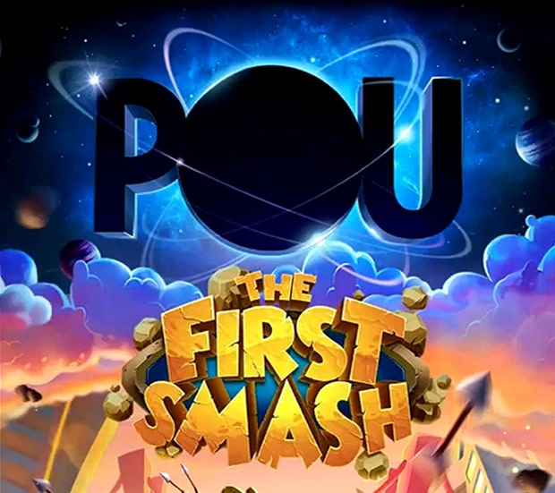
- 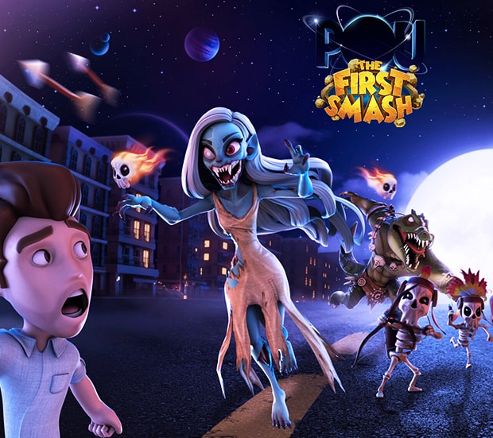
- 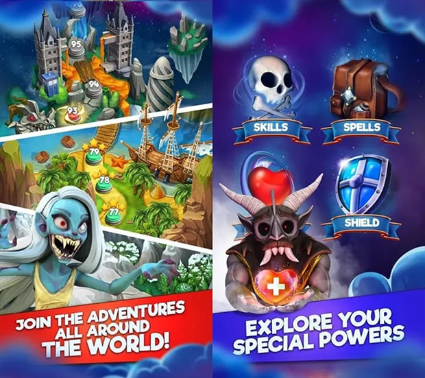
- 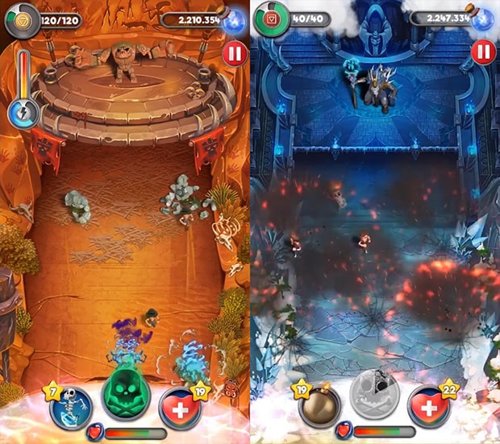
- 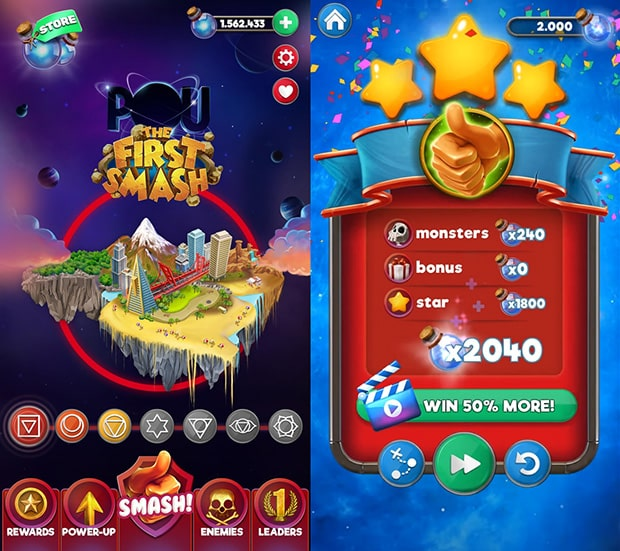

POU:TFS
|
Genre
Platform
Responsibilities |
Developer
Publisher
Release Date |
"Power of the Universe: The First Smash" or POU to be short, is a casual clicker game developed for Android and iOS, where earth is invaded by all kinds of wicked creatures and player needs to save the world by smashing them.
This project had a top-notch art style focus - a little too much for a casual game of this caliber, that other aspects of the game like gameplay and economy didn’t get enough attention and meet the expectations. Although I had some ideas about how to improve them, game was in very late into development in terms of mechanics when I arrived at the company that there was not much to be done.
Project was cancelled shortly after I left the company due to inconsistencies I have mentioned.


Next, Please!
|
Genre
Platform
Responsibilities |
Developer
Publisher
Release Date |
"Next, Please!" is a gamified soft skill development tool for customer representative training purposes of several banks in Turkey.
It is a sales game where you should make sales to different customers with different personalities and profiles, which are designed acording to the 5-factor personality model of "OCEAN". Aim is for players to improve their skills in business life.
Next Please features entertaining surprise cards, combo opportunities to get more points with multiple selections, a system to bond with customers and options to elevate the mood of the customers.training
Telekom World
|
Genre
Platform
Responsibilities |
Developer
Publisher
Completion Date |
"Telekom World" is a city-building game for PC, aimed towards educating the personel of Türk Telekom - one of the biggest telecommunications provider of Turkey. Gameplay consists of players trying to mantain the telecommunication infrastructure of a city to satisfy more customers and make profit, while also being challenged by other companies.
Players advance their technology, increases their coverage area and maximize the quality of the services provided, while learning about how these technologies work and how quality of service can be increased in real life.


İşVille
|
Genre
Platform
Responsibilities |
Developer
Publisher
Release Date |
"İşVille" is a serious game we developed for Türkiye İş Bankası. Players are expected to develop their towns by performing the basic functions of banking i.e. collecting deposits and making loans, by answering the questions of the customers who come to their branches, by providing services to them and satisfy their needs.
Players can also create groups and collaborate with theirfriends in training. By controlling their budget and using their knowledge, they can grow both their bank and their town, and become a banking legend!


Auron
|
Genre
Platform
Completion Date |
Developer
Worked On |
"Auron" is a 2D side-scroller adventure game I have developed as a physics engine for my "Physics in Games" class, where side-scrolling is not on an infinite horizontal plane, but instead on actually curved celestial bodies (planets, moons, asteroids etc.). Every object in the game universe has its own gravitational pull, and kinetic/potential energies - thus every object can be interracted with.
Players are free to leave their home planet and explore the solar system, mine resources, complete missions, customize their ship modularly, and a lot more. Aside from casual adventure game logic, players can also mess with the physics of the game universe; with a powerful enough thruster for example, players can go as far as changing the orbits of planets and make them collide with eachother.
Even though it was a very promising prototype, I couldn't find a proper story, objective or a unique use of the mechanic, and left it as a potential idea. Due to its incomplete state, I won’t be able to provide a demo.


QuizGame
|
Genre
Platform
Responsibilities |
Developer
Publisher
Release Date |
QuizGame is a gamified reinforcement and recall tool for corporate trainings. 80% of information learned in trainings is forgotten within the first 24 hours. QuizGame enables employees to reinforce voluntarily what they learnt. It adds motivation to learning with excitement, competition and other game mechanics.
QuizGame combines training with fun! It features "Lifelines", each better than the other, "Combos", that will boost your points as you answer consecutive questions correctly, "Quarantine" where incorrectly answered questions accumulate for more points, tournaments and other multiplayer features where you can challenge your friends colleagues, and profile page where players can evaluate their stats and compare it with everybody else.


Jö
|
Genre
Platform
Completion Date |
Developer
Worked On |
Started as a school project, "Jö" is my first fully-playable PC game with working mechanics, actual levels and a decent story, where you play as an entity named Jö, trying to discover the meaning of its existence and its connection with the concept of reality.
I did every aspect of it, and learned a lot while doing so. Although I'm not able to spare much time to develop it any further for a while now, I honestly think that it really contains some great ideas, and may have a potential. I really hope to complete it one day with substantial imporevements and release it as a free game.
Due to its relatively incomplete state and my faith in actually releasing it for free one day, I won't be able to provide a demo as of now.

Polybattle
Genre
First-Person Shooter
Release Date
August 2020

Lootland Royale
Genre
PvE Survival Shooter
Release Date
2022 (TBA)

Shoot Out!
Genre
First-Person Shooter
Release Date
September 2020

Baduka
Genre
Casual Puzzle
Release Date
January 2019

pliq
Genre
Casual Puzzle
Release Date
March 2019

Luca: The Dreamer
Genre
2D Puzzle Platformer
Release Date
July 2018
POU:TFS
Genre
Casual Clicker
Release Date
April 2018

Next, Please!
Genre
Puzzle Simulation
Release Date
May 2017
Telekom World
Genre
Real-Time Strategy
Release Date
March 2017

İşVille
Genre
Strategy Management
Release Date
April 2016

Auron
Genre
2D Open World Adventure
Completion Date
April 2016

QuizGame
Genre
Casual Trivia
Release Date
January 2016

Jö
Genre
2D Puzzle Platformer
Completion Date
November 2015
'U'ltimate Sandbo'X'
Written on:
June, 2021
Length:
5 minutes read
Since the day I knew myself, my most dominant hobby has always been playing video games, but I have never played them to just have fun, I always had some ideas about how I would have done things a bit or a lot more differently. In my personal opinion, there are things that are subject to critical thinking, and things that are not. For example, visual realism (thus things like 3D modelling, lightning etc) is not a subject of critical thinking, because most of the time, we are limited by the capacity of hardware - I remember seeing Tomb Raider 2 for the first time, thinking to myself that it can’t get any more realistic than that, and it is a ridiculous thought when we think about it now. Same can be said for the backend as well, we are again limited by the calculations that can be made per second, thus our hardware.
When I was little, when I look at a game, what goes in the backend have always been too hidden and mysterious, and what goes in the frontend have always been too blurry to comprehend how far it can go (nowadays, I honestly think that it will go all the way up to ‘The Matrix’ level), but I was always able to see, feel, and understand the UX (thus UI), because for UX, we are not really limited by our hardware, we are limited by our thoughts and our understandings of the experience. We didn’t really obtain amazing new technologies which makes us able to design new UX’s that were not possible before, what is now possible was also possible back then. We just optimized it more and more. And because I was the user, in order to just play a game I had to understand how its UX worked, even better, UX had to teach me, and this always amazed me. I was always able to accumulate experience and ideas about how to improve the UX, so I did. The more I learned, the more I wanted to contribute.
I like problem-solving. In fact, I can’t just leave a problem hanging and go to sleep, whatever the topic may be, I should solve it as soon as possible, then I can rest peacefully. UI/UX design continuously challenges me and satisfies my need for problem-solving in a creative manner.
I like the concept of optimization, in every aspect of my life. I like optimizing my timeline, my living space, my small island full of features in Minecraft, my ship in an online MMO, my files and folders, my code, my design. UI/UX is the ultimate sandbox of optimization, there is almost always room for improvement.
And my perfectionism. Because of their nature, no 3D model or no 2D art can be perfect, nor they need to be, because it is these small natural quirks that render them unique and authentic. Designing UI/UX is the only thing that ever satisfied my perfectionism. Every container perfectly matched with each other, having the exact same gap in between, with all its symmetry and matching color palettes, stuff like these render any other artform, robotic and meaningless, but renders UI great.
UX WORKFLOW
Written on:
October, 2020
Length:
5 minutes read
While designing the UX, my most important consideration is the approach of being absolutely user-centric. Most of the time, our own perception, understanding and style is our primary decision making mechanism while designing stuff, but in terms of designing the UX, we have to walk in users shoes, and try to understand their thoughts more than anything else. Even when we think that we understand them well enough, we probably don’t, and this is where making user research, defining personas, creating journey maps, creating multiple prototypes, usability testing and analysing them comes in. Key here is empathy, being able to approach things according to data and feedback.
First comes the analysis. Depending on the playerbase we are aiming the game to be for, I would examine the expectations, demands, content we were to present, and try to foresee what kind of problems there may be. In this phase, I also like to inspect my own previous experience, and look at the existing similar examples, because it is a lot easier to see, criticise, and understand what went right or wrong with them. At this point, if it seems a bit obscure, I would also create flowcharts about the optimal path we would like our players to take.
After having understood these, I would begin designing very basic wireframes, and then prototypes, trying to manifest different approaches and ideas, and coming up with a variety of solutions. 70% of the time, I try to design stuff that are proven to work, while 30% of the time I try things that are completely new in the hopes of finding better, or equally viable but different designs, to inject some uniqueness to it. I then try to properly blend these designs (as a whole or parts of it)(of course, sometimes, all parts of a particular design works only in its own context, in which case I don’t touch it) and select some of them (hopefully, all).
When I have enough ideas and prototypes, I present them for evaluation to my seniors / production directors. I like documenting my inspirations, findings, and my thought process about the decisions I made. This also helps me see my design more objectively, so if I were to find something while documenting that can’t be explained by everything I mentioned before, I go back to my previous stages to either make sense of it or to redesign / tweak it. After this has looped several times and all looks fine, I begin working on the UI, and this loop repeats a couple more times with the emphasis on the UI art this time around. When there are any small question marks along the way, I also really like doing AB testing, or simply asking questions and evaluating feedback (I guess this can be done with colleagues in the office, doesn’t have to be users).
When everything is more or less resolved, I start implementation, either personally or by handing over my design. To tackle any issues which may arise while implementing, I like following a similar feedback loop with both my seniors and developers working on it. When that particular UI/UX design is implemented and concluded, there are two final things I do: 1- I just go in and play the game like a regular player with no subjective opinions, to once more confirm its integrity. 2- If necessary tools are available, I would like to continue monitoring player behaviour, and document my findings on how we can optimize the UX further. These findings can either be tackled directly, or feed the next update in the product timeline.
'Hollow Knight' by Team Cherry
Cancer of the Games Industry (TUR)
Kendimi bildim bileli tek idealim olarak belirlediğim oyun sektörüne dahil olduğum 2014 senesinden bu yana, sektörde çok fazla şey değişti. Özellikle de Türkiye’de. Bu değişimler kapsamında dünya ile de paralel sayılabilecek fakat Türk insanının kafa yapısı itibari ile çok daha yoğun ve kirli bir biçimde, oyun sektörünün “Karanlık Çağ” diyebileceğim bir döneme girdiğini düşünüyor, ve her geçen gün daha yoğun bir yalnızlık hissiyatı içinde buluyorum kendimi. Sektörün içindeyseniz neden bahsettiğimi gayet iyi biliyor olmalısınız. O karanlık kelime: ‘Hypercasual’*. Geride kalan 2 senede sektörde yaşadığım deneyimlerim üzerine geçtiğimiz ay içinde yaşadığım birbirinden bağımsız birkaç vukuattan, ve bir arayışta dahi olmamama rağmen şirketlerin devamlı tarafıma ulaşmasından, her birinin aynı vasat beklentiler içinde olmasından dolayı an itibariyle bardağım taşmış bulunmakta. Düşüncelerimi açık seçik beyan etmezsem sıyıracağımı hissediyorum. ‘Hypercasual’ camiasındaki hiçbir şirket veya işveren ile gelecekte herhangi bir etkileşimim olmasını da istemiyorum, haliyle fişlenmeyi de dert etmiyorum. Kimse kusura bakmasın ama – ya da baksın, umrumda değil – ‘Hypercasual’ denen şey oyun sektörünün kanseridir, vebasıdır ve düşebileceği en dip noktadır.
Çok sıkkın ve sinirliyim. Kendime ve herkese.
Etrafıma baktığımda çok fazla kişinin aynı şeyleri düşündüğünü fakat kimsenin bir şey söyleyemediğini görüyorum. Herkes işsiz güçsüz kalmaktan, damgalanmaktan korkuyor. Aynı günümüz Türkiye’sinde sorunlardan bahsetmek gibi, ya da bahsedememek. İşin kötüsü, bu tarz bir serzeniş gerçekten de sektörden dışlanmaya yol açabilir görünen o ki – belki de şimdiye kadar yapmak üzere olduğum şeyin bir benzerine şahitlik etmemiş olmamın sebebi de budur. Benim tahammül edecek enerjim kalmadı, haliyle birileri tarafından kulaktan kulağa “Bu çocuk bizim şirketlerimize böyle böyle demişti, bu çocuktan uzak durun, bu çocuk bilmemne” diye laflar dolaşacaksa, dolaşsın; neler olup bittiğini birinci elden göreceğim.
Herkese soruyorum; gerçek oyunlar hakkında en ufak fikri olmayan, paraya olan açlığından tam manasıyla gözü dönmüş kişi ve şirketlerin kol gezdiği, dolandırıcılığın norm haline geldiği bir sektörde – aslen çok masum ve içten olması gereken ‘oyun’ sektöründe, çıkıp da “Ne oluyor yahu, nereye gidiyoruz biz?” diyen kimse yok mu ya? Geçmişte sadece birkaç yakın arkadaşım / meslektaşım ile konuşabildim bunları, aldığım cevap her seferinde aşağı yukarı “Haklısın fakat ne yapalım abi.” oldu. Ülkedeki sektörel anlayış ve özellikle de ekonomi bu vaziyetteyken kimseye maddiyatı öne koyduğu için kızamam, kızmıyorum. Sadece içtenliğimle merak ediyorum o yüzden; her şeye rağmen ideallerine bağlı kalan, “ruhunu şeytana satmayı reddeden” kimse yok mu? Herhangi bir store’da resmen 50.000 tane bulabileceğimiz ‘match-3’ / ‘board game’ / ‘stick figure’ / ‘shit 2D’ / ‘ass 3D’ oyunu, diğer 49.999 kopyasından tesadüfen sıyrılıp tutunca, bunu ve eline geçen parayı “başarı” yahut “oyun yapmak” zannedip egolarında boğulan kişilerin ve şirketlerin hegemonyasından oluk oluk tiksinen tek kişi ben miyim? Hypercasual ‘sözde’ oyunlar yaptığını idda eden, aslen tek yaptığı hazır çöp adam asset’lerini** sıraya dizip “Oyuncuyu nasıl daha çok söğüşleriz, ekrana nasıl daha fazla banner reklam sıkıştırırız, başlama butonunu reklamın neresine koysak da oyuncu yanlışlıkla reklama tıklasa, oyuncu replay butonuna tam basacakken üstüne reklam çıksın da store’a yönlendirilsin” gibi şeyler düşünmek olan, oyunların en temel prensiplerinden dahi tamamen bihaber, tek önemsediği para ve insan psikolojisini suistimal etmenin yolları olan kişilerin ve şirketlerin her yeri sarmasından fiziksel anlamda kusmak üzere olan bir tek ben mi varım? Niye ayaklanmıyoruz abi?
- Dipnot temizliği 1 -
*: Son zamanlarda bu konuda iş teklifi getiren insanlara verdiğim "Hypercasual ‘sözde’ oyunların altında yatan fikirlerden de, bu oyunları tasarlamaktan da, oynamaktan da tek kelimeyle tiksiniyorum.” (Kibar olmak adına hiç bu kadar net yazamadım tabii bunu.) cevabıma tepki olarak (olsa gerek) “Yoo hayır, biz casual oyun yapıyoruz. Hypercasual oyunlar konusundaki görüşlerinize katılıyoruz!” diyen bir güruh doğmuş. İlk anda “Ulan ‘The Sims’ de casual, ‘Euro Truck Simulator’ da casual, hatta ‘Factorio’ da casual neticede. Belki?” diye düşünmek istiyor insan, lakin alakası yok ne yazık ki. Evet, gerçekten de kağıt üzerinde casual oyun yapıyorlar belki, fakat bu yazıda okuduğunuz ve okuyacağınız çoğu şey bir nebze daha hafif olabilmekle birlikte Türkiye’deki casual sözde oyun şirketleri için de geçerli, zira store’larda 50.000 değilse de 25.000’er tane bulabileceğiniz tavla, okey ve kart oyunları da, en az hypercasual ‘sözde’ oyunlar kadar ‘sözde’ oyundur. Binlerce senelik bir oyunun 25.000 adet mobil uyarlaması arasında bir tanesi sıyrılmıştır, ve şirket / kişi oyun yaptığını zannetmektedir. Evet, oyun yaptınız, bravo.
**: Bir teori tabii ama, 2012 yılı civarlarında henüz ‘mixamo’ gibi servisler yokken bedava oyun asset’leri paylaşılan bir forumda rig’lenmiş ve kullanıma hazır bir çöp adama rastlamıştım. Çok net hatırlıyorum, o ünlü büyük kafalı çöp adam. Ya çok benzeri, ya da ta kendisiydi. İşin trajikomiği, bu işi ilk yapan insanlar bu tür asset’lerin bir karakter modeline bağlanabileceğinden habersiz olacak kadar bilgisizlerdi muhtemelen, ya da oyunun bir şeye benzeyeceğine dair hiçbir umutları yoktu ve üşenmişlerdi basitçe. Öyle ki, (Nasıl tutabildiğini aklım hâlâ almıyor ama)(Aslında alıyor, Einstein’ın deyişiyle “infinite human stupidity”) tutan ilk hypercasual oyunlar itibariyle bu cahillik camiada bir tarz, bir imza oldu resmen. Nasılsa ortaya çıkacak ürünün kaliteli veya özgün olması da kimsenin umrunda değil, herkesin işine geliyor bunu kasıtlı bir seçim olarak tanıtmak, benimsemiş gibi davranmak. Düşünsenize, vasatlıklarını bir nebze kurtarmak için “Şuraya bir karakter koyup zemini de bir tema kapsamında giydirmesek mi?” deseniz, “O nasıl yapılıyor bilmiyoruz ki” ya da “Kim uğraşacak” yerine “Ooo hayır, biz hypercasual yapıyoruz. Sen bu işten anlamıyorsun galiba.” falan diyebiliyorlar.
Aslında, benim sorunum çok basite indirgenebilir: Oyun deyince aklınıza ne geliyordu? İçtenliğimle soruyorum arkadaşlar, korkmayın, oyun neydi yahu?
Oyun; hikayesiyle, görselleriyle, müzikleriyle, unutulmaz karakterleriyle, eşsiz diyaloglarıyla, sunduğu özgürlükler ve yaşattığı duygular ile bize bir şeyler katan, yeri geldiğinde kişiliğimizi şekillendiren, adeta bizi biz yapandı. ‘Oyun yapmak’ arzusunun en büyük motivasyonu da, başka insanların hayatlarında benzer bir etkiyi yaratabilme ihtimaliydi.
Ya şimdi oyun deyince aklınıza ne geliyor? Ruhsuz bir şekilde adeta günaşırı basılan*, asla kimsenin umrunda olmamış ve olmayacak, hiçbir özgünlük yahut kalite barındırmayan yüzbinlerce sözde ‘oyun’dan özde ‘suistimal mekanizması’ndan oluşan bir çöplük... Koca bir distopya, bildiğiniz ‘Black Mirror’ bölümü.
Kimse bana çıkıp da trend falan demesin, “Günümüz insanı bunu talep ediyor, bunu oynamaktan zevk alıyor” muhabbeti yapmasın. Hayır, öyle bir şey kesinlikle yok. Bu söylem, vasatlığını makul gösterme arayışındaki kişilerin ve şirketlerin gerçekleri yansıtmayan palavrasından başka bir şey değildir. Aksine, hypercasual çöplüğün yarattığı over-saturation ve bir takım AAA şirketlerin bile micro-transaction, loot-box-gambling, pay-to-win, ads-to-play türü mentaliteleri benimsemeye başlaması gerçek oyuncuların kaliteli oyun açlığını bir hayli arttırmış durumda. Tam olarak bu yüzden indie sektörde kaliteli oyunlara olan rağbet hiç olmadığı kadar fazla. Açın bakın, tek kişinin geliştirdiği ‘Stardew Valley’, iki kişinin geliştirdiği ‘Hollow Knight’, ufak bir stüdyonun geliştirdiği ‘Slay the Spire’ gibi oyunların neler başardığını. Şirket bazında bir örnek olarak da ‘Disco Elysium’ verilebilir. Hypercasual sözde oyun şirketleri “Kişi başı x dolarlık reklam bütçemizle kaç gösterimde ne kadar indirme sayısı ve retention elde edebiliriz de, kaç reklam izletebilirsek kâra geçeriz?” diye düşünürken, gerçek oyun geliştiriciler salt ürettikleri kaliteliyi seve seve satın alan insanlar ile gerçek maddi ve manevi başarıyı elde ediyorlar. Üstelik bunu birer ikişer kişi, hiçbir sermaye olmadan yapıyorlar. Milyon dolarlık yatırımlar almış 30’ar 40’ar çalışana sahip hypercasual sözde oyun şirketleri bu bütçeyi doğru stratejilerle gerçek oyunlar yapmaya harcasa katbekat büyük gelirler elde edilir, üstüne küresel anlamda mevcut durumla kıyaslanamayacak boyutlarda itibar kazanılır.
Sektördeki hypercasual sözde oyun şirketleri istediği kadar yatırım alsın, istediği kadar para kazansın; siz oyun yap-mı-yor-su-nuz! Oyunlardan en ufak an-la-mı-yor-su-nuz! Sözde oyunu tesadüfen tutmuş, ya da yatırım almış kişilerin ve şirketlerin, en seviyesiz üslupla “Sen işsizsin, biz milyonlar içinde yüzüyoruz” düşüncesi zerre umrumda değil. Bir kağıt parçasına yazdığı kelimeleri muska diye cahil insanlara onbinlerce liraya satarak zengin olan dolandırıcı hocadan hiçbir farkınız yok.
Oyun sektörünü bir defterin satırlarındaki sayılar üzerinden takip edip hypercasual sözde oyun şirketlerine yatırım yapmayı 21. yüzyıl dünyasının glitch’i, para hilesi zanneden yatırımcılara da anlatmak istediğim basit bir hesap var: 10 yatırımcının 10 hypercasual sözde oyun şirketine 10’ar birim yatırım yaptığını düşünelim. 10 şirketin 10’u da kağıt üzerinde her şeyi doğru yapsın. Ne kadar doğru yaparlarsa yapsınlar, sonunda o 10 şirketin 6’sı batıyor, 4’ü şirket değerini 50’şer birime çıkarıyor. Başlangıçtaki 100 birim toplam değer sonda 200 birim oluyor. Kazanım var mıdır, vardır tabii, fakat hypercasual sözde oyunlar yapısı itibariyle diğer sözde oyunların tutmamasından besleniyor, ve birileri ne yaparsa yapsın, ne kadar doğru yaparsa yapsın büyük kaybediyor. Bir de 10 yatırımcının 10 gerçek oyun şirketine 10’ar birim yatırım yaptığını düşünelim. Yine 10 şirketin 10’u da kağıt üzerinde her şeyi doğru yapsın. Size her şirketin değerini kaç birime çıkarabileceğini söyleyemem, bir veya birden çok şirketin değerini 10’dan 50’ye çıkarmayı başarıp başaramayacağını da söyleyemem, ama kesinlikle hiçbirinin değer kaybetmeyeceğini ve son toplam değerin 200 birimden yüksek çıkacağını söyleyebilirim. Gerçek oyunların tutması veya tutmaması konusunda tesadüfe yer yoktur. Her şey doğru yapılmışsa ve kaliteli bir ürün ortaya çıkmışsa öyle ya da böyle tutacaktır ve kazandıracaktır, zira kaliteli oyunlar başka kaliteli oyunlarla aynı pazarda olmaktan olumsuz etkilenmez, aksine doğan rekabetten beslenir. Siz hiç ‘Witcher 3’ var diye ‘Skyrim’ oynamayan, ya da ‘Hollow Knight’ var diye ‘Ori and the Blind Forest’ oynamayan birini gördünüz mü? Sadık oyuncu kitleniz seve seve gelecekteki oyunlarınızın testini de yapar, reklamını da. Size sadece kaliteli oyun yapmak düşer.
Tüm bu düşünceler de beni varmak istediğim noktaya getiriyor: Türkiye’de kaliteli oyun yapmak. Örnek olarak da sunulabilecek tek bir şirket geliyor aklıma. Sektörün içinde iseniz bunu da tahmin edebiliyor olmalısınız; çıkardığı oyunları dünya çapında ses getiren, kalite bazında küresel oyun sektörünün devleriyle yarışan ‘TaleWorlds'. Koca ülkede TaleWorlds dışında doğru düzgün oyun yapan / yapmayı hedefleyen bir adet şirket yok mu gerçekten?** Aşmış kodlama bilgilerini, mükemmel tasarım kabiliyetlerini, özgün fikirlerini gidip de CV ve portfolio’larındaki birer sayfaya hapsederek vakitlerini ve enerjilerini hypercasual şirketlerin vasatlığına hibe etmeyi reddeden, elini taşın altına koyan, doğru düzgün bir oyun şirketi kurmaya, gerçek bir oyun üretmeye çalışan kimse yok mu?
- Dipnot temizliği 2 -
*: The Matrix’te Morpheus’un Neo ile ilk simülasyonda yaptığı diyalogdan bir satır geldi aklıma. “There are fields - endless fields - where human beings are no longer born, we are grown.” – makineler sözüm ona şirketleri ve kişileri, yetiştirilen insanlar da bu sözde oyunları temsil ediyor adeta.
**: Deneyimlerim doğrultusunda eski çalışanı olduğum ve orda geçirdiğim günlerimi hâlâ severek andığım Pixofun’ı ve isim isim yazamayacağım birkaç kaliteli oyun şirketini de bu listeye katabilirim. Bilmediğim dahası da vardır şüphesiz. ‘Oyunda kalite’ anlayışımı Türkiye dahilinde en iyi TaleWorlds’ün özetlediğini düşündüm sadece, ki geçmişte TaleWorlds’de çalışabilme şansına erişebilmiş olmadığımı da belirtmeliyim.
“O gerçek oyunu sen niye üretmiyorsun, o düzgün şirketi sen niye kurmuyorsun?” derseniz, ben o gerçek oyunu ve oyunları üretmeye çalışıyorum zaten. Kendimi bildim bileli çalışıyorum ve enerjimin son damlasına kadar da çalışacağım. Beceriyorum ya da beceremiyorum, o benim sorunum fakat; bu ülkede, bu koşullarda, tek başıma (son zamanlarda kız arkadaşımın da katkılarıyla), elimden geldiğince deniyorum. Niye şirket kurmadığıma gelirsek; ben kimim ki şirket kurayım?* Annem milletvekili değil, babam zengin değil, amcam aşiret değil, ben de süper zeka değilim. Orta sınıf bir ailenin kazıya kazıya bir yerlere gelmeye çalışmış orta sınıf çocuğuyum. Hayatım boyunca ne bir tanıdığım oldu, ne bir torpilim. Kimseye yalakalık yapmadım, asla doğrularımdan ve ideallerimden sapmadım**. Velhasıl, vaziyetimi şöyle özetleyebilirim sanırım: Hangi yatırımcı yüzüme bakacakmış? Şaşarım!
Sosyal medyanın gücüne pek güvenen biri olmamama karşın, işbu düşünsel çaresizliğim neticesinde LinkedIn hesabımın 10 senelik tarihinde ilk kez bunları buraya yazma gereği duydum. Çoğu kimsenin bu yazdığımı beğenebileceğini, ya da altına yorum yazabileceğini zannetmiyorum zira etkileşiminiz yanlış kişilerin (mesela çalıştığınız hypercasual sözde oyun şirketlerinin sahiplerinin) feed'lerine düşebilir, bazı kaşlar kalkabilir, bazı başlar yanabilir. Böyle bir beklentim yok haliyle, başınıza bela almayın. Okurken “Evet be, evet.” dediyseniz bile benim ve benim gibiler için hâlâ küçük de olsa bir umut vardır. Söylemek istediğiniz şeyler içinizde ukte kalacaksa özel mesaj yoluyla yazın, kesinlikle okur ve dönüş yaparım. Öte yandan açıkça davamın arkasında olmak isterseniz de ayrıca teşekkür ederim.
- Dipnot Temizliği 3 -
*: Geçmişte bir tür şirketleşmeyi denedim aslında kendi çapımda. 3-5 birikimimi kendimi 1-2 sene cepten idare etmeye adayıp, bir oyun projesine all-in yapabilmek istedim. Benzer bir şey yapabilecek 2-3 kişiyi çok aradım, fakat bulamadım. Ve yine, kimseye böyle bir birikimi olmadığı, ya da olan birikimini böyle bir işe girişerek kullanmak istemediği için kızmıyorum, kızamam. Normal koşullarda kimse tarafından bu tip bir risk alınmasına gerek olmamalı zaten, ve konu da bu, normal koşullardan ne kadar uzak olduğumuz...
**: İdeallerim konusundaki inatçılığıma dair bir anım var. Üniversite 3. sınıfta, sene içinde düzenli olarak sektörden insanlar (reklam sektörü falan tabii) bölüme davet ediliyor, iş hayatı ile ilgili seminerler veriyordu. Günlerden bir gün biri geldi - ismine John diyelim, ve bir workshop düzenleyeceğini söyledi. Olay şu idi; katılımcılar rastgele bir şekilde iki gruba ayrılıyor, bir grup 'kişisel silahlanma karşıtı', diğer grup ise 'kişisel silahlanma taraftarı' posterler tasarlıyor. Ben 'kişisel silahlanma taraftarı' gruba düştüm, fakat bunu savunmak istemiyordum. Benim gibi huzursuz birkaç kişi daha vardı, fakat hiçbirinden bir tepki göremedim, çalışmaya başladılar. Ben elimi kaldırdım, karşı gruba geçmek istediğimi söyledim. John "Workshop'ın amacı bu zaten, mezun olduktan sonra yeri geldiğinde istemediğin işler de yapman gerekecek, idealizm karın doyurmuyor." dedi, "Hiçbir güç bana, hayat görüşüme aykırı bir iş yaptıramamıştır, gelecekte de yaptıramayacaktır." dedim, John "Aç kalırsın o zaman." dedi, ben de "Aç kalırım o zaman." diye yanıtladım. John durdu durdu, birden çok yüksek bir sesle "Kurallar böyle, workshop'ıma katılmayacaksan çık dışarı!" diye bağırdı. Sınıf arkadaşlarım, hocalarımız, herkes şok olmuştu. Tek kelime etmeden dışarı çıktım. Bir hocam geldi arkamdan, "Bleda yapma etme, geç otur yerine, bir şey yapma istemiyorsan." dedi, "Hayır hocam, oturmayacağım izninizle, ideolojilerimden veya idealizmimden utanıyor değilim." şeklinde bir cevap verdim ve 20 dakika kadar dikildim kapının önünde. Ardından kapı açıldı, hocam tasarımların bittiğini söyleyerek içeri davet etti beni. Geçtim oturdum bir köşeye. John'un yüzünde bariz bir tedirginlik vardı. Biraz duraksadı, hiçbir tasarıma bakmadan şu cümleyi kurdu; "Arkadaşlar, bir çoğunuzda huzursuzluk sezdim fakat niye hiçbiriniz bunu yapmak istemediğini söylemedi - diyecektim fakat şu arkadaş söyledi... Ehm. Evet." ve ortaya çıktı ki, bu bir tasarım workshop'ı değil, "Bu meslekte ruhunuzu kaybetmemek için bazen 'Hayır' da diyebilmelisiniz." ana fikirli bir uygulamaymış. Ben ise sadece olduğum insan olarak sunumun 'düşündürücü' boyutunu yok etmiştim. John'un durum karşısındaki hazırlıksızlığı da, ona bu tepkiyi veren ilk kişi olduğumu düşündürmüştü. Diyeceğim o ki, idealizm gerçekten de bazen aç bırakıyor belki ama, bazen de ezberleri bozuyor ve sizi farklı kılıyor.
Oldukça uzun bir yazı oldu, söylemek istediğim birkaç diğer şey de başka zamana kalsın. Buraya kadar okuyabildiyseniz fazlasıyla minnettarım. Umarım düşüncelerimde yalnız değilimdir. Olmadığım varsayımı üzerinden, kapanışı yaparken aklıma söyleyebilecek tek bir şey geliyor; bulun abi beni, bulun. Ben sizi bulamadım, siz beni bulun.
Barış ve sevgi ile...
Bleda
Trance
|
Cause |
Design Date |
Back in 2017, while I was having just another long and sleepless night, something felt different. I wasn't high or drunk or anything, but that night was a weird one, a special one, and I felt really creative - so much that I knew it right there and then. I decided to stay up all night and extract as much of this trance as possible. I did a lot of stuff, from composing music to writing stories. At one point, out of nowhere, I have also decided to create a bunch of these 'things' of which you can see above. Textures? Patterns? Ornaments? I don't know.
Honestly, I still can't begin to undestand what happened that day, but all the work I have done in that timeframe still manages to amaze me - it reminds me of how far my brain can go in proper circumstances. Sadly though, I have no idea what those "circumstances" are.
While making these in particular, I have relied on some OpenGL frameworks and procedural generation methodologies. I then post-processed the outputs (mostly color-correction and layering adjustments). I'm pretty sure that I can't replicate these in terms of originality even if were to try right now.
Jack of All Trades, Master of None
Written on:
March, 2018
Length:
5 minutes read
I have always considered myself "a dreamer", and one of my biggest dreams since the day I've known myself, is to develop a game and do every aspect of it by myself - you may call it a "magnum opus". Kind of like what Jonathan Blow did with "Braid", although if I were to be realistic, I'm not a genius as he is, thus I'm not even sure if that's possible. But whatever, the point is; this is my mindset (accordingly, my skillset), and that same mindset actually applies to every aspect of my life. There are so many things to do and experience in this world, but so little time to live and go through it all. Nonetheless, I want to taste as much of what my life may have to offer as possible. As a result of living with this mindset for over 20 years, I became someone who can perfectly be described as "jack of all traits, master of none", both in terms of my profession and my everyday life. Not to mention, I'm pretty happy for being this way. On the other hand, with billions of people around the globe, "system" is not really recognizing this as a positive thing.
Corporations, schools, recruiters; they are all searching for that person who is as good as possible in what they do, and fulfilling that role is the only requirement as far as they are concerned - other aspects of the individual is none of their business. For example, the fact that someone they are about to hire to a UI Designer position is also knowledgeable about things like quantum physics or playing insturments is irrelevant; if there is a better alternative with more experience or skill in UI design but no other wide (or even narrow) range of interests, it doesn't really matter for the employer, this hypothetical alternative always beats my hypothetical primary guy. Well, tell you what; I simply and absolutely reject this perspective. I really don't care if I won't be considered qualified or my applications will be rejected because of this; I am doing a lot of things, and I will keep doing them. I play computer games, and I play them a lot, I obsessively love any kind of good quality music, I love movies and TV shows, I love Nordic Culture, I'm very interested in physics, quantum physics, philosophy, sociology, maths, biology, I like playing basketball, tennis, snooker, chess, I play guitar, piano, and some experimental insturments like jaw harp, kalimba and tremolo, I like reading books involving everything, from philosophy of existence to pure adventure. List goes on. I am constantly trying and pushing towards being the best that I could be - according to my own understanding, by trying to improve myself in this vast ocean of interests. However, this comes with a price: I am neither the best at something particular, nor trying to be. Simply put, I won't be that guy who sits at the corner of an office, doing whatever he does pretty well, but nothing else. Life is a constant state of learning, and I want to learn as much as possible about everything.
From a professional standpoint, this can correspond to a nowhere-near-best-but-pretty-decent game designer, who also roughly knows how to code, model 3D objects, rig and animate characters, how UI works, how physics works, how audio works, how server and client sides operates and so on. On paper, this game designer will probably not be able to create the best levels, craft the most effective in-game economics, or make the most convincing game-documentation presentation, but he is likely to do so much more in the background, little things here and there, or come up with a really weird but promising idea by combining - lets say philosophy of chess with syncopation in music as a result of his wide area of interests, that in the end, his contribution may end up surpassing the contribution of a better (sole) game designer, and expectations of everybody, inlcuding himself. Long story short, in my honest opinion as oppose to what 21st century thinks; this particular person is an amazing recruitment. On the other hand, my opinion matters very little, I suppose...
If you have actually managed to read everything above, you have my deepest gratitude. I really hope that you have an idea about how I feel about my life, my job, what I do, and why I do it. Admiring it or not, it is up to you.
Apocalypse-Comm
|
Class |
Design Date |
Back in the university, for our graphic design class, we had a very open-to-interpretation assignment. “How would people communicate if apocalypse happened?” was the question, coming up with an idea (which was supposed to actually make sense) and promoting it in the form of posters was the project - it was the perfect opportunity for me to make it about games.
As a tribute to Fallout series, I followed a pretty humorus / retro approach by creating a series of posters instead of one, which was how I imagined it would happen in the Fallout universe. In the end, final design worked pretty well in my honest opinion. Caused lots of laughter at least, which was kind of my goal. It got me an 'A', too.
Limbo Cat
|
Steam Community |
Design Date |
The game "Limbo" has a very special place in me. Back in 2010, I still had my doubts if I'm chasing a viable dream. Aside from opening a new era for indie gaming, Limbo also proved to me without leaving any room for doubt, that I will manage as long as I believe in myself and work very hard for it. So I did, and been doing since then.
Out of my love for cats and my admiration for the game, I have made this illustration even though I had not much confidence in my drawing skills - though minimalistic art style of it helped a lot.
In 2014, I have decided to post it to the Steam Community page of the Limbo, and I was overwhelmed by all the positive feedback. It stayed as the top Limbo artwork for a very long time. This also proves a point: it is very important to know our strengths & weaknesses, and undertake works accordingly. My idea was my strength but my lack of skill was my weakness, and I have properly capitalized on both for a succesful creation.
- 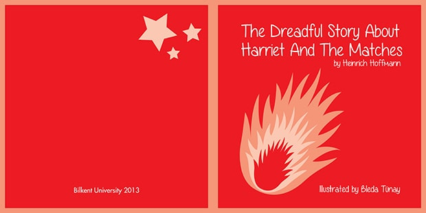

- 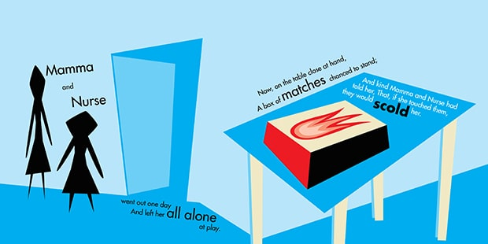
- 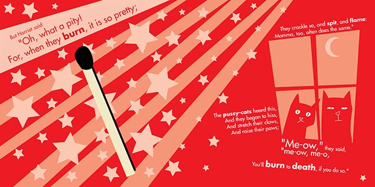
- 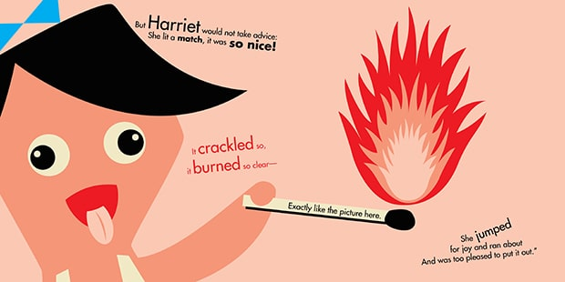
- 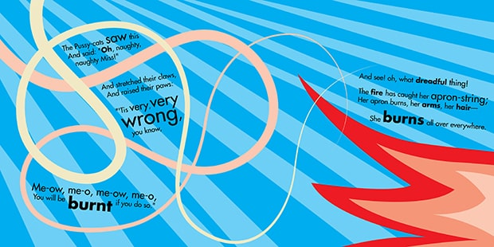
- 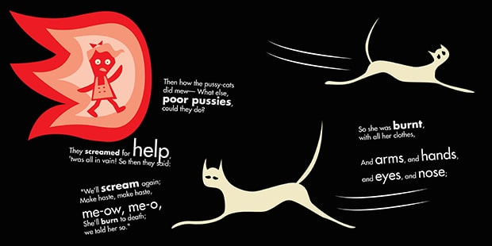
- 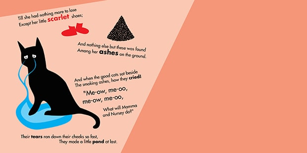
Harriet & Matches
|
Class |
Design Date |
This was the most fun-to-make non-game-related project I have worked on in the university. "The Dreadful Story of Harriet and the Matches", apparently a poem by the poet Heinrich Hoffman, was psychedelic childs story (in my opinion, considering it reads like a Quentin Tarantino movie) emphasizing the hazardous nature of playing with fire.
Aside from storytelling in a typographic manner, we had one more twist for this project: we were specifically allowed to use only 7 particular colors: red, light red, lighter red, blue, light blue, black and white. Not even ofsetting it by a single value in the RGB scale was allowed. I was perfectly fine with that, as vector illustration was one of my better qualities in terms of drawing stuff, and I did a fantastic job according to my beloved illustration instructor.
Favorite Games
RPG
The Witcher/Assassins of Kings/Wild Hunt, Final Fantasy VI, Chrono Trigger, The Elder Scrolls: Morrowind/Oblivion/Skyrim, Elden Ring, Dark Souls 1/2/3, Bloodborne, Diablo 1/2, Disco Elysium, Undertale, Fallout 1/2/New Vegas, Baldur's Gate 1/2, Salt & Sanctuary, Dragon Age: Origins, Kingdom Come: Deliverance, Planescape: Torment, D&D: Temple of the Elemental Evil, Sid Meier's Pirates!, Pillars of Eternity, Mass Effect 1/2, Vampire: The Masquerade, Neverwinter Nights 1/2, Deus Ex, Town of Salem, Magicka, Loop Hero, Kenshi
Platformer
Hollow Knight, Hyper Light Drifter, Journey, Hades, Celeste, Trine 1/2, Cuphead, One Finger Death Punch, Bastion, Transistor, Ori and The Blind Forest/Will of Wisps, Guacamelee! 1/2, Super Mario Bros, Sonic, Mark of the Ninja, Gunpoint, Rogue Legacy, Earth Worm Jim, Psychonauts, Bugs Bunny: Lost in Time
Strategy
StarCraft: Brood War/2, WarCraft 2/3, Civilization 2/3/5, Starsector, FTL: Faster Than Light, Into The Breach, Darkest Dungeon, Knights & Merchants, Theocracy, Pharaoh/Cleopatra, Slay the Spire, Stardew Valley, Heroes of Might and Magic 2/3/4, Crusader Kings 2/3, Europa Universalis 4, Stellaris, SimCity 4, Stronghold: Crusader, Red Alert 1/2, Desperados: Wanted Dead or Alive/2/3, Commandos 1/2/3, The Banner Saga 1/2/3, Homeworld, Shadow Tactics: Blades of the Shogun, Rome: Total War, Medieval: Total War, Company of Heroes, XCOM: Enemy Unknown/2, Age of Empires 1/2, Age of Mythology, Rise of Nations, Northgard, Foxhole, Banished, Age of Wonders, Banished, This War of Mine
Puzzle
The Talos Principle, Portal 1/2, Braid, Baba is You, The Witness, Return of the Obra Dinn, FEZ, Starseed Pilgrim, World of Goo, Snakebird, The Bridge, The Swapper, Gods Will Be Watching, Papers Please, Her Story, The Turing Test, Brothers: A Tale of Two Sons, Thomas Was Alone, Helltaker, The Bridge, Doki Doki Literature Club, The Room 1/2, Stephen's Sausage Roll, Manifold Garden, Hearthstone, L.A. Noire
Adventure
The Dream Machine, Monkey Island 1/2/3/4, The Longest Journey/Dreamfall, Beyond Two Souls, Detroit: Become Human, Last of Us 1/2, The Stanley Parable, The Beginner's Guide, SOMA, What Remains of Edith Finch, To The Moon, Finding Paradise, Impostor Factory, Hellblade: Senua's Sacrifice, Vanishing of Ethan Carter, Broken Sword 1/2/3, Machinarium, The Wolf Among Us, Myst, Syberia 1/2, Broken Age, Life is Strange 1/2/3, Grim Fandango, Batman: Telltale, Dear Esther, Firewatch, Gone Home, Year Walk, Dr. Langeskov The Tiger and The Terribly Cursed Emerald: A Whirlwind Heist, Jazzpunk, Heavy Rain, The Cave
Action
Grand Theft Auto London/2/3/Vice City/San Andreas/4/5, Tomb Raider 2/3/4 (Original), Half Life 1/2, Hotline Miami 1/2, NieR:Automata/Replicant, God of War, Sekiro: Shadows Die Twice, Far Cry 2/3, Red Dead Redemption 1/2, SUPERHOT, Mirror's Edge, Prince of Persia 1/2/3/2008, Hitman 1/2/3/4 (Original), Call of Duty: Modern Warfare, Spider Man, BioShock 1/2/Infinite, System Shock 2, Assassin's Creed 1/2/Black Flag/Valhalla, Duke Nukem 3D, Spec Ops: The Line, Batman: Arkham 1/2/3
Sandbox
Space Engineers, Minecraft, Euro Truck Simulator 2, Kerbal Space Program, Factorio, Microsoft Flight Simulator, Tabletop Simulator, Universe Sandbox 1/2, Heat Signature, Democracy 3, Uplink, Poly Bridge, Scribblenauts Unlimited/Unmasked, Garry's Mod, Space Engine, My Summer Car
Trance
Cause
Boredom
Design Date
2017
'U'ltimate Sandbo'X'
June, 2021 (5 minutes read)
I like the concept of optimization, in every aspect of my life. I like optimizing my timeline, my living space, my small island full of features in Minecraft, my ship in an online MMO, my files and folders, my code, my design. UI/UX is the ultimate sandbox of optimization, there is almost always room for improvement.
Apocalypse-Comm
Class
Graphic Design
Design Date
2013
Jack of All Trades, Master of None
March, 2018 (5 minutes read)
I am neither the best at something particular, nor trying to be. I won't be that guy who sits at the corner of an office, doing whatever he does pretty well, but nothing else. Life is a constant state of learning, and I want to learn as much as possible about everything.
Limbo Cat
Cause
Admiration
Design Date
2012

Shame on you if you have found this by examining the source code.
If not, congratulations, and I am already liking you.
Hit me up and let's have a chat.
Harriet & Matches
Class
Illustration
Design Date
2013
Favorite Games
As of 2021 (+100 games)
RPG: The Witcher 3: Wild Hunt
Platformer: Hollow Knight
Strategy: StarCraft: Brood War
Puzzle: The Talos Principle
Adventure: The Dream Machine
Action: Grand Theft Auto 5
Sandbox: Space Engineers
Cancer of the Games Industry (TUR)
August 24, 2020 (10 minutes read)
Kendimi bildim bileli tek idealim olarak belirlediğim, 2014 senesi itibariyle dahil olduğum oyun sektörünün “Karanlık çağ” diyebileceğim bir döneme girdiğini düşünüyor, ve her geçen gün daha yoğun bir yalnızlık hissiyatı içinde buluyorum kendimi.
UX Workflow
November, 2020 (5 minutes read)
While designing the UX, most important consideration in my opinion is the approach of being absolutely user-centric. Besides our perception, understanding and style being the primary decision making mechanism, we have to walk in users shoes first and try to understand their thoughts more than anything else.